酒狐画廊
东方小女仆（TLM）模组里的酒狐，一组 AI 绘图实验。最新的在最上面：在 Minecraft 机械动力里搭出真正运转的蛋糕工厂，截图后交给 GPT 重绘；往下是更早的几轮，用 Qwen-Image-2.1 在本地显卡上生成，每一轮同一提示词换 4 个种子，金框是挑中的那张。图下写了它对在哪、错在哪。点图放大。
AI 生成内容 ：本页插画均由 AI 生成（Qwen-Image-2.1、GPT 图像模型）；游戏截图、模型渲染和模组挂画除外，图下已注明。
MODEL QWEN-IMAGE-2.1 Q8 GPU V100 16GB FP16 STEPS 25 ~28S / IMAGE
GPT IMAGE · 女仆发电 · 实机工厂 v19
表情和握把修正
在 v18 那份 GPT 原图（放大的裁块）上只改两处：表情从「>_<」紧闭眼改回社畜脸（死鱼眼、黑眼圈、冒汗、嘴巴无力张着），参考 v14 里她的脸；握把原来从横杆末端朝前后两边都伸出，改成只朝外（和转轴伸出齿轮箱同一方向）伸出一截，参考游戏里的曲柄特写。跑了 3 份，选第 2 份，只在脸、手和整根横杆的范围内拼回 v18。
PICK 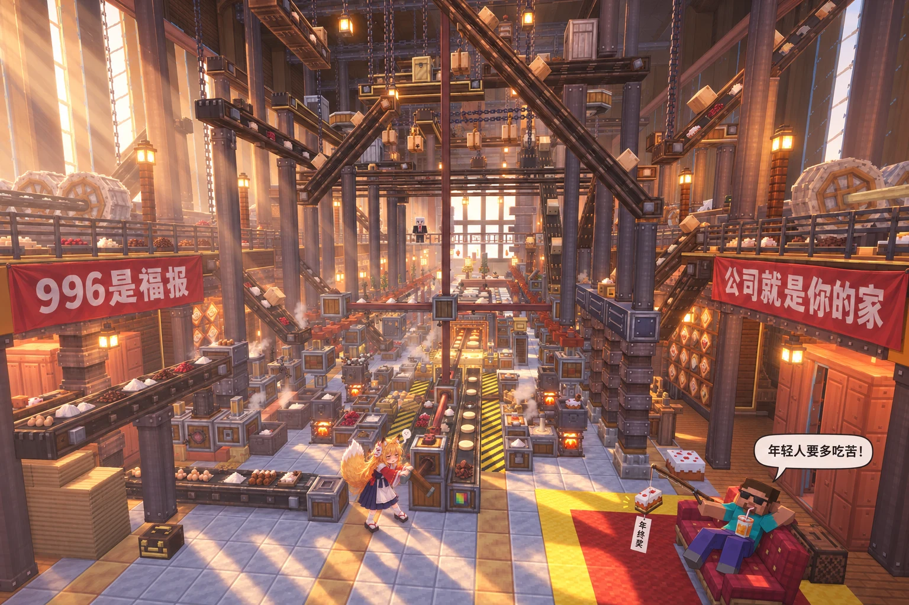
v18 + 表情与握把局部修正 其余都是 v18 原样。 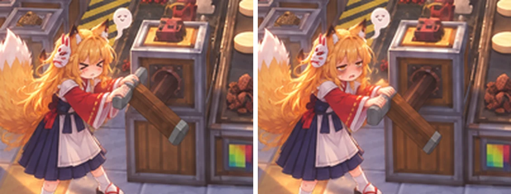
v18 · v19 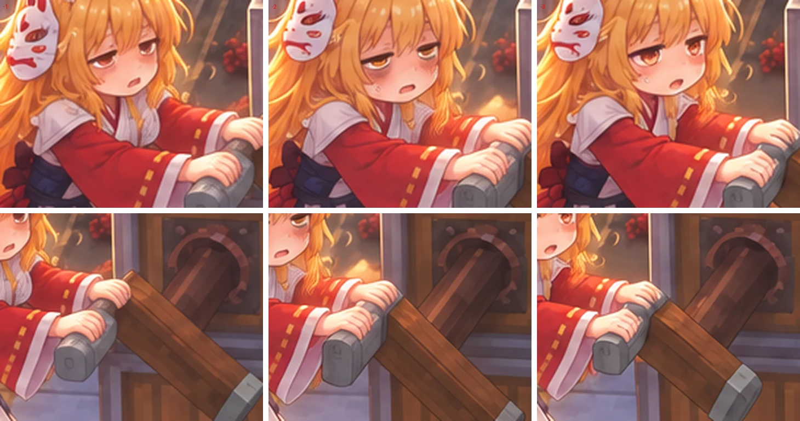
三份修正：1 · 2（选用）· 3 1 偏可爱，3 眼睛太有神。
GPT IMAGE · 女仆发电 · 实机工厂 v18
照着 Wone_J 的动画重画
从 v14 裁出酒狐和曲柄这一块（放大到 1536×1024，不叠加任何东西），参考图单独交给 GPT：B 站 UP 主 Wone_J 的动画《辛勤工作的酒狐》 里的一帧（左右翻转，让曲柄在她右边）和连续几帧，以及游戏里用固定机位拍的这个曲柄的特写。要求曲柄按 T 字结构画（转轴从齿轮箱伸出、横杆搭在轴端、握把从横杆一端平行于轴伸出），大小按动画里曲柄和她的比例；酒狐大小不变，站到齿轮箱左边双手握住握把。跑了 3 份，2 份结构对，选第 2 份，缩回原尺寸只把改动拼回 v14。
PICK v14 + 酒狐与曲柄局部重画 只改了这一块，其余都是 v14 原样。备选整图在 final/gpt-crank-hall-v18-alt.png。 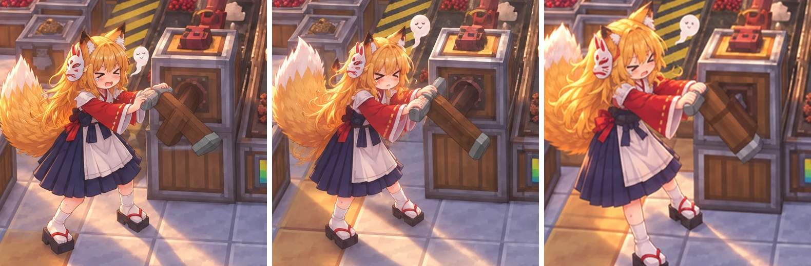
三份重画：1（备选）· 2（选用）· 3 3 的横杆直接插进齿轮箱，又像操纵杆。
GPT IMAGE · 女仆发电 · 实机工厂 v17
像自行车曲柄和踏板一样
v16 的曲臂很长、直指她的手，握把朝镜头缩成一个点又藏在拳头里，画面上只剩一根杆子，看起来像操纵杆。这次按「曲柄 + 踏板」的结构重新渲染：短曲臂从齿轮箱正面的轮毂伸向左下，末端一根加粗的灰色握把垂直于曲臂、平行于转轴朝镜头伸出（俯视下在画面里朝下），组成 L 形；再按透视画出握把绕轮毂转的那一圈的一段轨迹（绕过轮毂下方，避开她的头）。GPT 只把它重画成插画风格、让她双手上下握住握把、去掉旧木杆；只在曲柄和她的手、前臂范围内拼回 v14，酒狐大小不变。
PICK 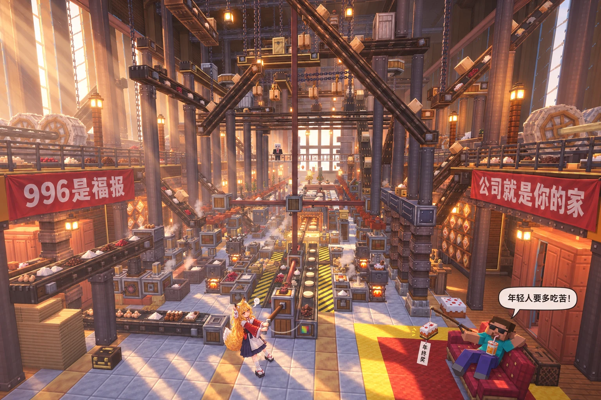
v14 + 曲柄与双手局部重画 只改了曲柄和她的手、前臂，其余都是 v14 原样。 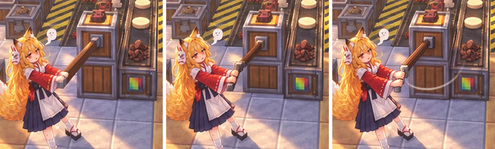
v16 · 备选 · v17（选用） 备选整图在 final/gpt-crank-hall-v17-alt.png。 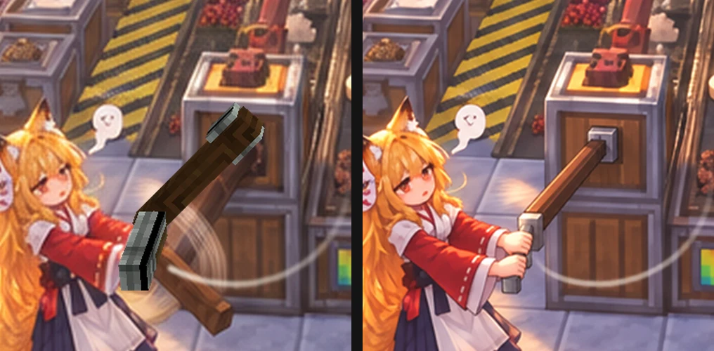
给 GPT 的底图 · GPT 重画后
GPT IMAGE · 女仆发电 · 实机工厂 v16
曲柄按真实几何渲染后再重画
回到 v14，酒狐大小不变，只改曲柄。v14 把曲柄画成了一根从齿轮箱正面圆孔里斜着戳向镜头的粗木杆。这次不让 GPT 想象形状：用机械动力原版曲柄模型从拍照机位按真实透视渲染，轮毂落在齿轮箱正面的真实位置（与画面里的位置差几个像素），木杆转到指向她拳头的角度（51°），粗细与原版相同、只加长到够得着画里放大的酒狐；把渲染图贴到 v14 裁块（放大 4 倍）上，让 GPT 只把它重画成插画风格、去掉旧木杆，形状位置一律不许改。跑了 3 份，选第一份，缩回原尺寸后只在曲柄范围内拼回 v14。
PICK v14 + 曲柄局部重画 只改了曲柄这一块，酒狐和其他部分都是 v14 原样。 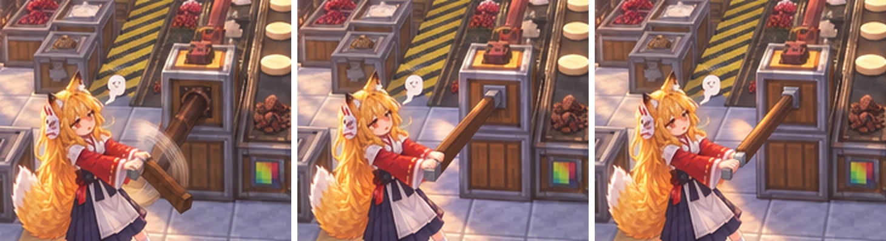
v14 · v16（选用）· 备选 备选整图在 final/gpt-crank-hall-v16-alt.png。 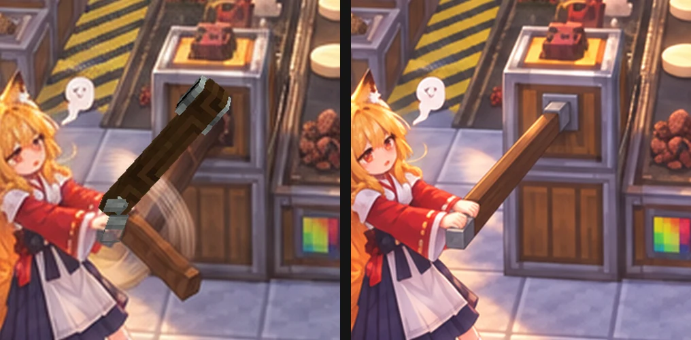
给 GPT 的底图 · GPT 重画后 底图里还留着旧木杆，GPT 负责去掉它并统一画风。
GPT IMAGE · 女仆发电 · 实机工厂 v15
只改酒狐这一块
在 v14 上做局部修改：把酒狐和曲柄所在的一块（576×384）裁出来放大到 1536×1024，参考图只给单独画好的 b2，要求只重画酒狐和她握着的木杆、握把，并把她画大约 1.5 倍，其余一律不动。跑了 3 份，选 wf3，缩回原尺寸后只把实际改动的像素拼回 v14，其余地方逐像素不变。
PICK 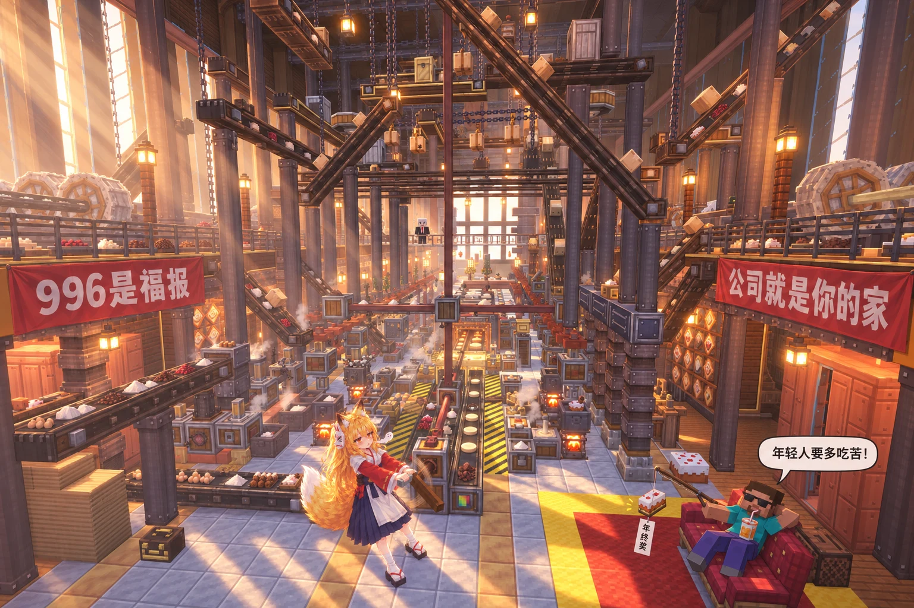
v14 + 酒狐局部重画 只改了酒狐这一块，文字和其他部分都是 v14 原样。 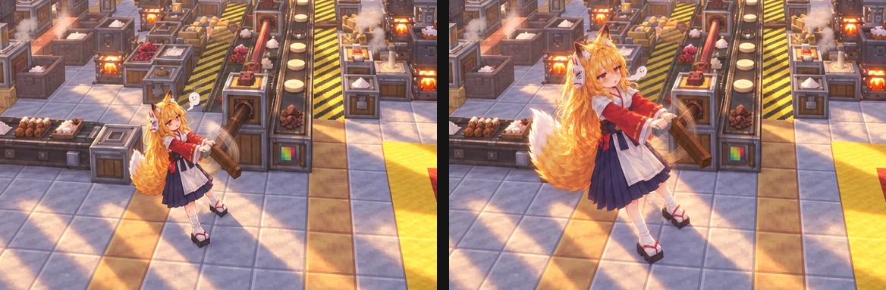
同一区域：v14 · v15 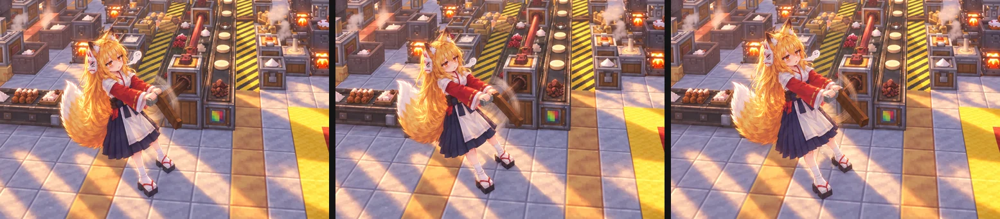
三份局部重画：wf1 · wf2 · wf3（选用） 备选 wf2 的整图在 final/gpt-crank-hall-v15-alt.png。
GPT IMAGE · 女仆发电 · 实机工厂 v14
先单独画好酒狐摇曲柄
三处改动。提示词原样传递：Codex 原本会先用自己的语言模型改写提示词再交给绘图工具，现在用 codex_image.py 把提示词包在标记里要求一字不改，并在跑完后从会话记录核对实际传给工具的提示词和参考图（这一轮全部原样）；绘图工具最多收 5 张参考图，多的拼成一张。空中物品不再画也不贴。斜坡包裹：给了游戏里两处斜坡传送带的放大截图，要求是贴着带面、随坡倾斜的素面纸箱。酒狐摇曲柄：先按游戏里的这一角单独画了 4 张，选 b2（木杆从轮毂斜向左上、双手握住握把往后拽）作为大图里她和曲柄的参考，大图照着它画。
PICK GPT 一次出图，未做局部修改 四处文字逐字核对过；烘炉前只有生面糊和原料。 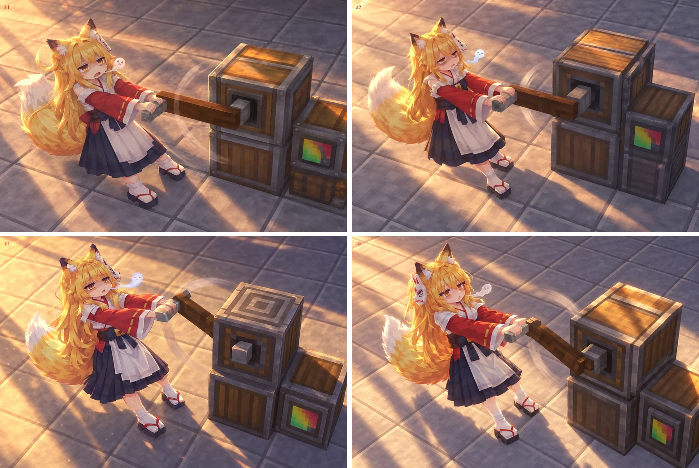
单独画的 4 张，选 b2 作参考 a 组是木杆水平指向她，b 组是木杆斜向左上。 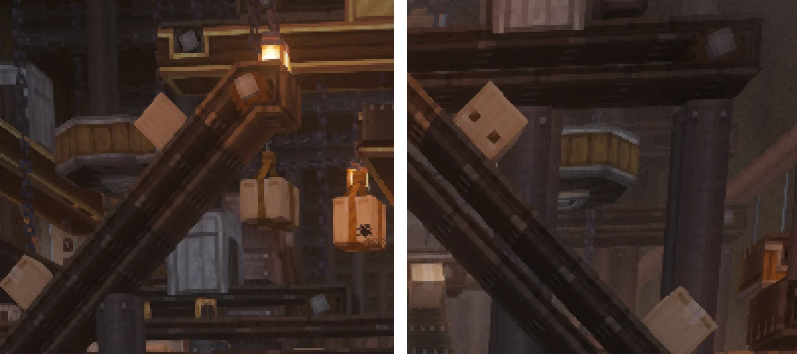
给 GPT 的斜坡包裹参考（游戏截图放大） 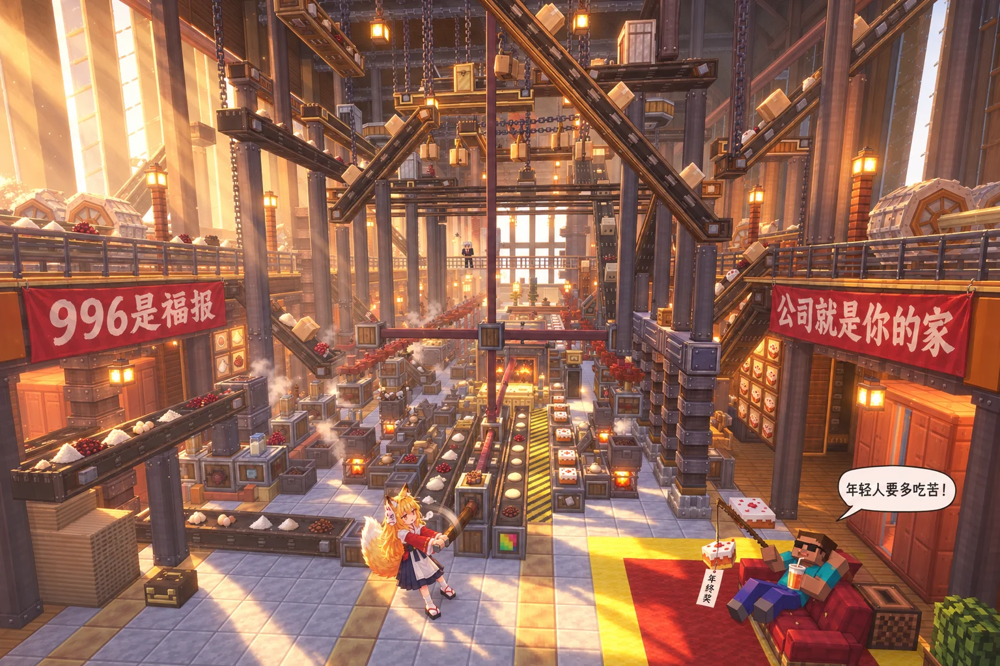
另一张（未采用） 右车道烘炉前又出现了成品蛋糕。
GPT IMAGE · 女仆发电 · 实机工厂 v13
真的在运转的工厂
场景换到独立服务器上一起调：产线开头两侧 7 台弹射置物台真的在往车道上抛鸡蛋、面粉、糖、牛奶、可可豆、浆果和蛋糕胚；四台搅拌器真的在搅（场景数据包加了「鸡蛋 + 糖 + 面粉 + 牛奶 → 生蛋糕胚」的搅拌配方），成品从盆侧吐到置物台，再由机械臂送上车道；车道提到 64 rpm，末端开口回收，传送带一直满着在流动。曲柄那一段和酒狐的位置是我在游戏里手动改的。照片用 Freecam「灵魂出鞘」拍：镜头停在机位，我的角色站在天桥上一起入镜，头顶名牌隐藏。GPT 照这张截图重绘，空中一律不画；烘炉前的成品蛋糕用局部修改换成生料；空中的 11 个原料按弹射台的真实弹道（从机械动力源码读出的公式）算出位置和大小，用 GPT 照原版图标画的物品图贴上。
PICK 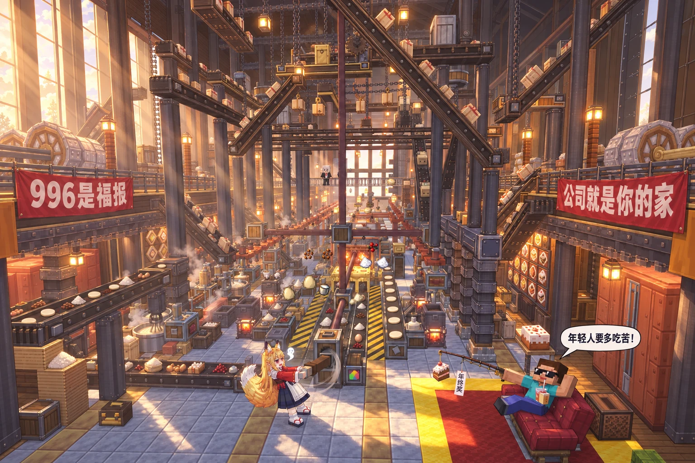
GPT 重绘 + 局部修正 + 按弹道贴入的空中原料 四处文字逐字核对过；烘炉前只有生面糊和原料。 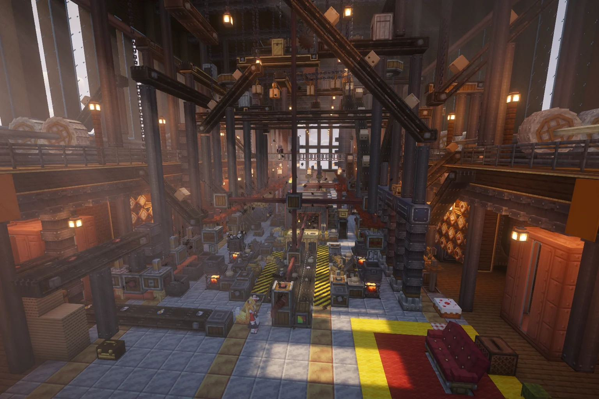
游戏截图（Freecam 机位，运转中冻结） 空中的深色小点是运转时的粒子，重绘时去掉了。 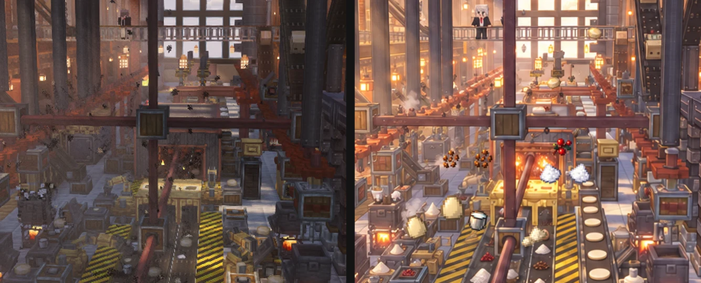
产线开头：游戏 · v13
GPT IMAGE · 女仆发电 · 实机工厂 v12
空中的物品照游戏摆
飞行物先在游戏里搭好：弹射置物台改放在流水线两侧上方的竖轴齿轮顶上（由齿轮从底部带动），三条抛物线横跨产线，分别是鸡蛋、面粉、糖，每条三个，物品正对镜头、全亮，并检查过镜头到抛物线两端和每个物品都没有遮挡。GPT 即使拿到游戏截图、底图里也贴好了游戏像素，仍然不按位置画小物品（两次都排成别的样子），所以分工改成：GPT 只负责清掉旧的飞行物、画弹射台和置物台，再单独照原版图标画出三种物品；物品的位置、大小和翻转角度全部取自游戏截图（有/无飞行物两张的差分），最后一步贴上去，之后不再经过 GPT。远处几个只有二三十像素、GPT 放错位置的弹射台和置物台，直接用游戏截图抠出来、按周围画面调色贴上。
PICK 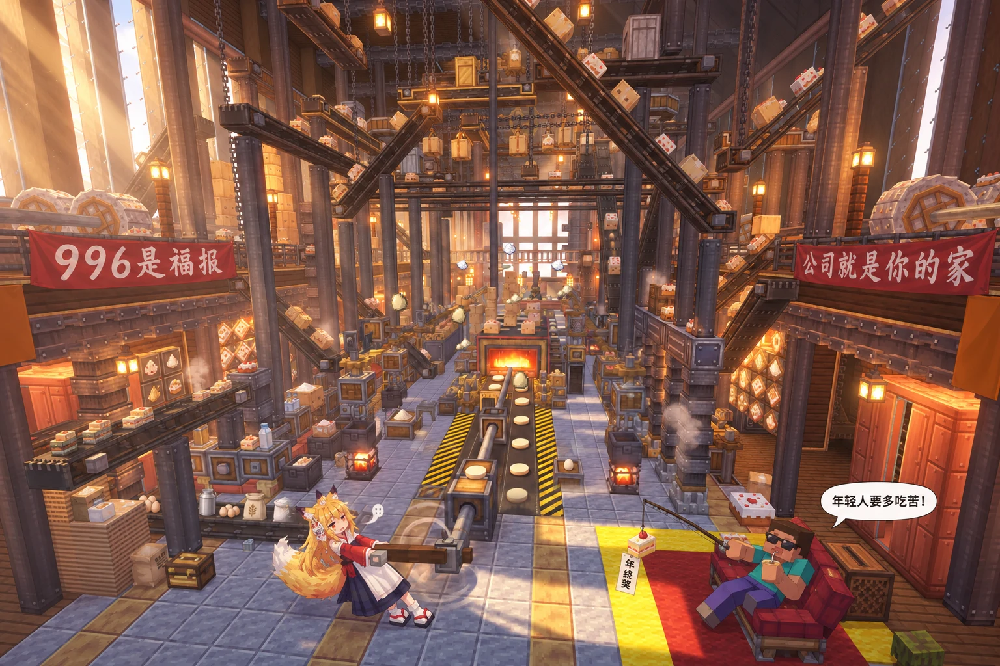
v11 + 中部局部修改，物品按游戏位置贴入 只改了产线中段，酒狐、曲柄、史蒂夫和四处文字都是 v11 原样。 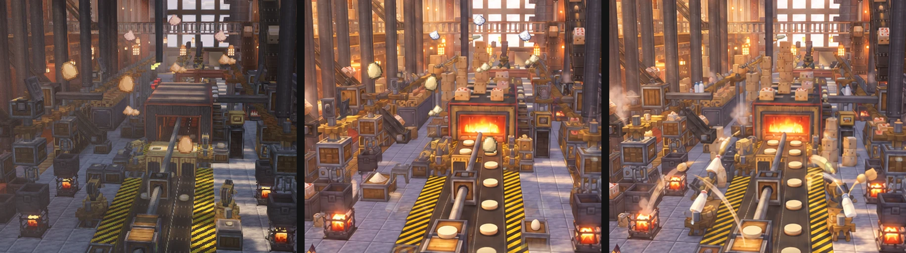
游戏截图 · v12 · v11（同一区域） v12 的九个物品和游戏截图逐个对应；v11 是 GPT 自由发挥的奶瓶和弧线拖尾。 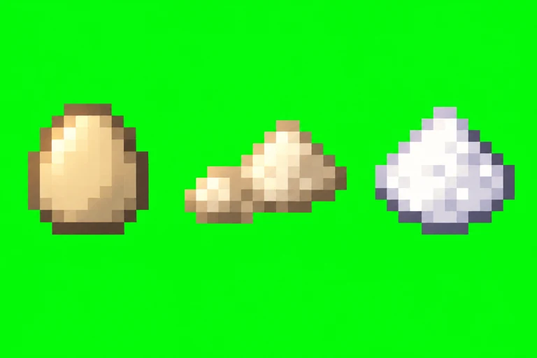
GPT 照原版图标画的物品 只负责样子；位置、大小、角度来自游戏。
GPT IMAGE · 女仆发电 · 实机工厂 v11
摇曲柄的分解动作
两个问题。斜传送带上的货物穿模：之前货物是摆在空中的展示实体，按平面高度摆，斜坡上就陷进带子里；改成直接写进传送带自己的物品栏（Inventory NBT），游戏按传送带表面摆放，斜坡上也贴着带面。曲柄：写了个小工具 crank_pose.py，用机械动力曲柄的原始模型（轴环、一根穿过轴环的木杆、末端与轴平行的灰色握把）和酒狐的模型，用反向运动学让两只手握住握把，渲染出转一圈的四个时刻、三个角度，作为分解动作组图交给 GPT；另外按游戏截图的相机（实测 FOV 77：设置 70，旁观模式飞行时 ×1.1）单独渲染了曲柄在这个画面里应有的样子，用于最后修曲柄。重绘后再分别修了曲柄（去掉多出来的竖木块）和蛋糕顺序（烘炉前改回生面糊，左下地面传送带改成鸡蛋、面粉、牛奶），只把改动区域拼回。
PICK 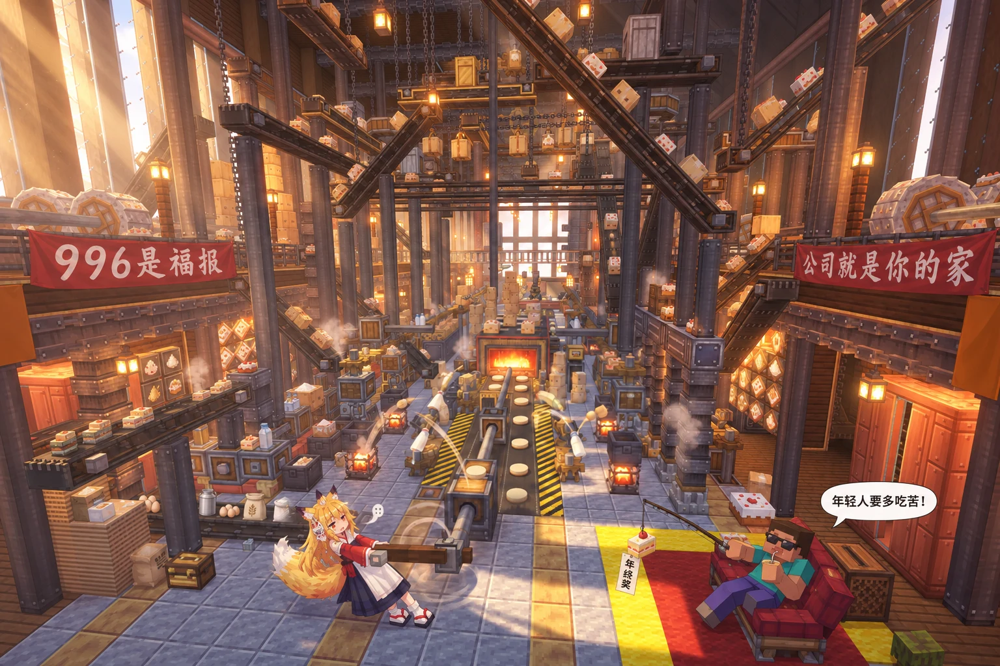
GPT · 运转中的截图 + 分解动作组图，两处局部修正 曲柄：轴端灰色轴环、一根直木杆（另一侧露一小截）、左端灰色握把，酒狐双手拽着握把后仰发力。四处文字逐字核对过。 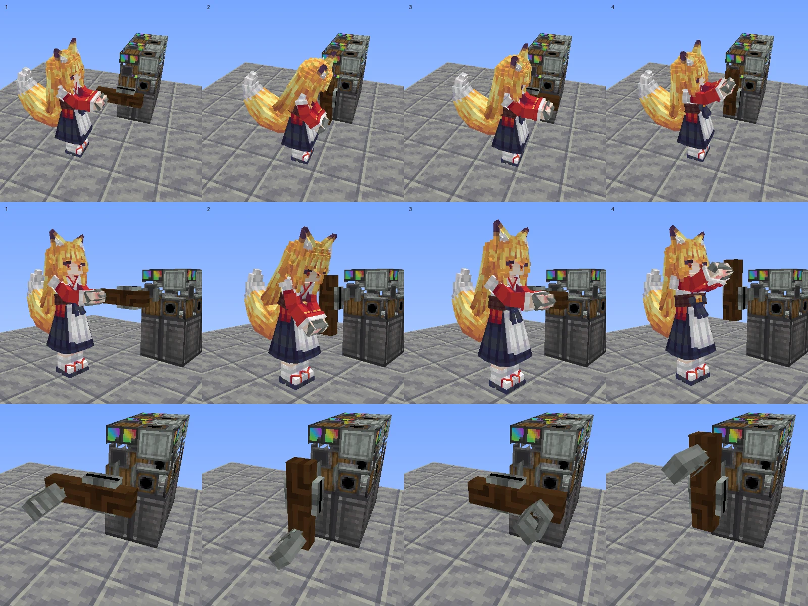
给 GPT 的分解动作组图 机械动力曲柄原模型 + 酒狐模型，手放在握把上靠反向运动学算出；四列是转一圈的四个时刻。 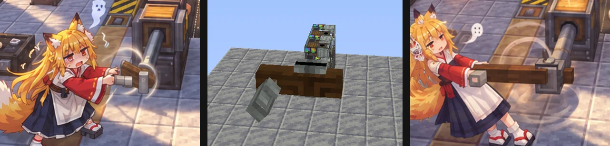
曲柄：v10 · 按画面相机渲染 · v11 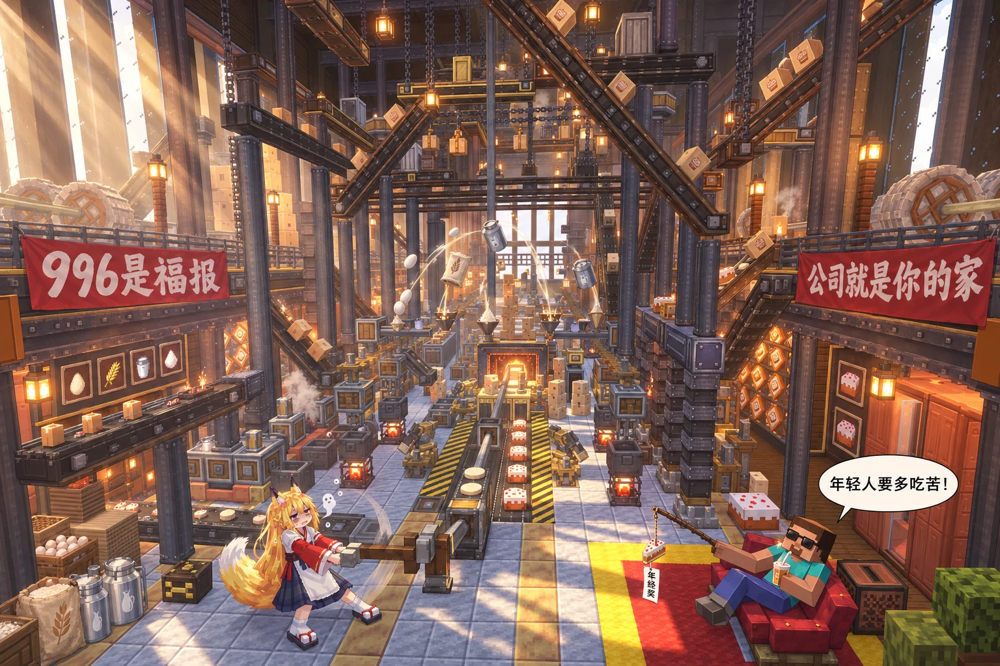
另一张（未采用） 动作也对，但曲柄画成了两根横杆加一个底座，还多了游戏里没有的牛奶罐在飞。
GPT IMAGE · 女仆发电 · 实机工厂 v10
飞在空中的鸡蛋
在 v9 的基础上加了三台弹射置物台：在流水线两侧把鸡蛋、面粉、糖抛过大厅，落到对面的置物台上，每条抛物线上有两三个正在飞的物品（游戏里用展示实体按抛物线摆，弹射台的盖子是弹起状态，像刚发射完；摆之前检查过整条弧线不撞任何方块）。空中的传送带都加了支撑：下面有方块就立钢梁柱，否则用链子吊到上方的结构或屋顶，不再悬空。曲柄：v9 被画成了一个钩子/扳手；这次给 GPT 加了一张从同一方向拍的曲柄特写，重绘后再单独修了一次曲柄（只把改动区域拼回）：轴端的灰色轴环、一根短木摇臂、末端的灰色握把，酒狐双手握着握把。
PICK 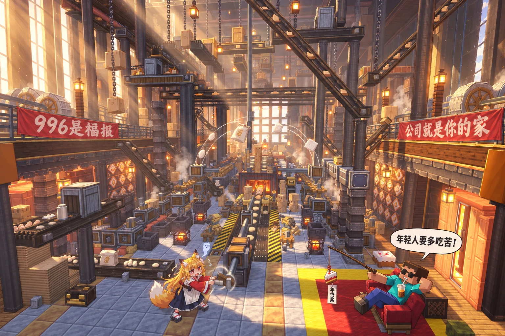
GPT · 在运转中的游戏截图上重绘 + 曲柄修正 烘炉前的传送带上是生面糊，左下地面传送带上是鸡蛋、面粉、牛奶。四处文字逐字核对过。 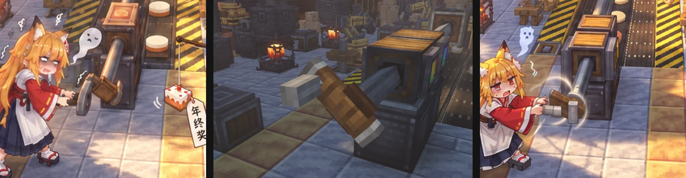
曲柄：v9 · 游戏 · v10 中间这张特写这次一起给了 GPT。 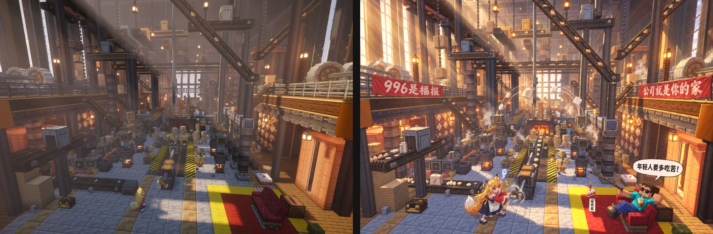
左 游戏截图 · 右 重绘 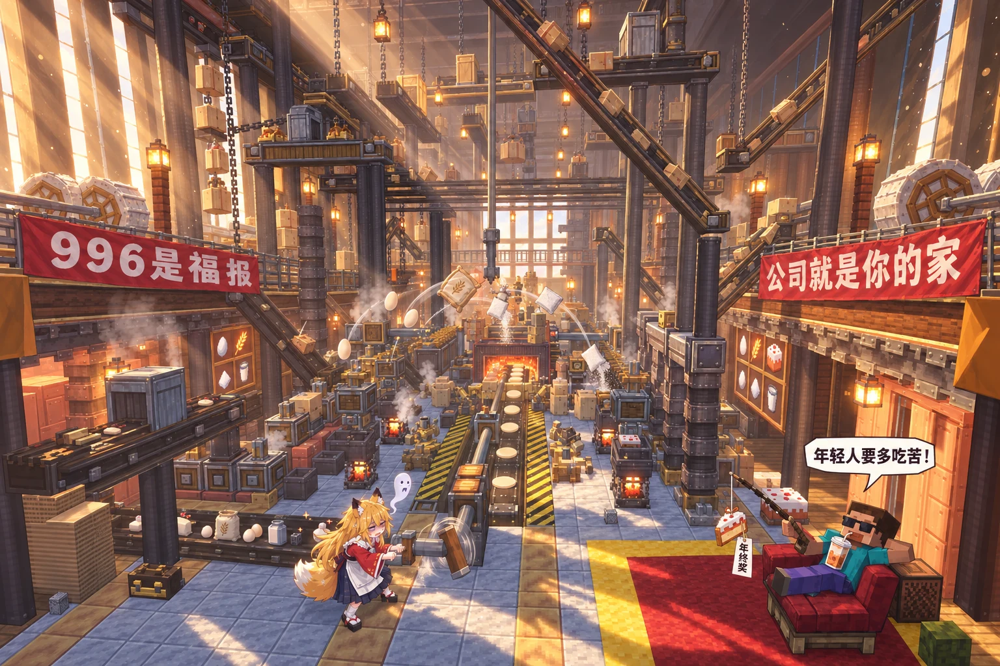
另一张（未采用） 飞行物更多、告示牌图标更清楚；但曲柄画成了一前一后两根臂，不对。
GPT IMAGE · 女仆发电 · 实机工厂 v9
麻花动力
参考了两个 B 站视频：「麻花动力：基于俺寻思之力的机械动力全物品工厂」（BV151cHe1E7w），里面是几十条传送带在各个高度、各个角度交错穿插；「机械动力 6.0 中央工厂总线建设」（BV1ow64BTED2），里面是 6.0 的链式传送机挂着包裹在空中走、成墙的物品告示牌、包了外壳的传送带。在游戏里加了一层「蛛网」：约四十条传送带（平的、斜上斜下、包安山岩或黄铜外壳、带隧道），部分末端掉进溜槽；夹层之间拉了六个链式传送机节点，挂着一串串纸箱；两侧夹层下是两面物品告示牌墙。这些都由程序在已有机器的空隙里摆放，保证中轴视线和 Steve 的角落不被挡住。镜头抬高到大厅后墙上方，能同时看到整张网和尽头的窗。流水线照旧运转、停住、拍照，交给 GPT 重绘；最后修了一处：GPT 往进烘炉前的传送带上画了成品蛋糕，改回生面糊，左边地面传送带上改成鸡蛋、面粉、牛奶。
PICK 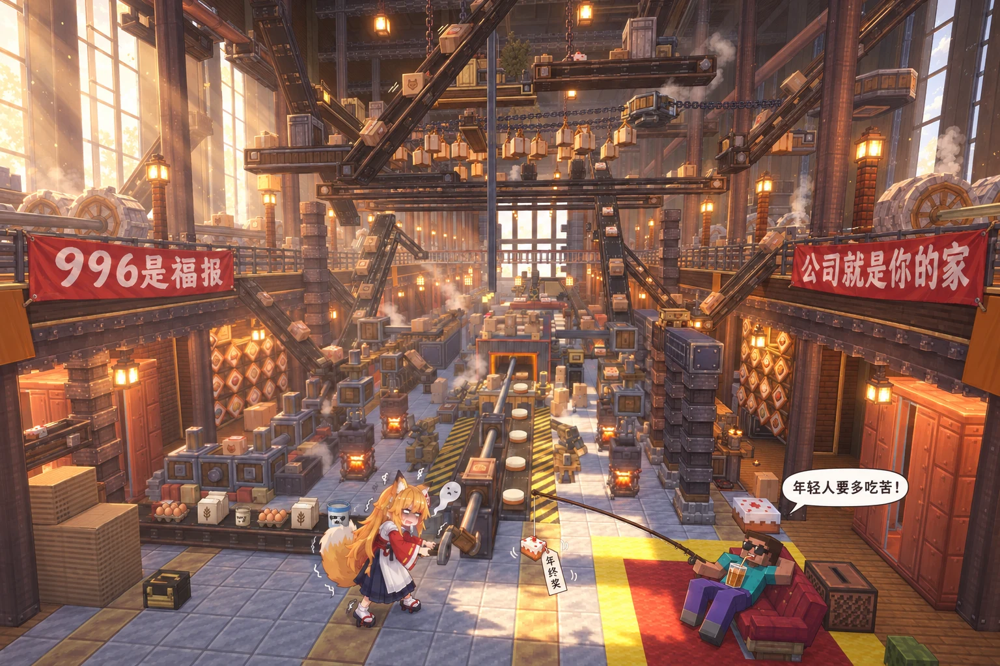
GPT · 在运转中的游戏截图上重绘 + 一处修正 网状传送带、链式传送机和告示牌墙都和截图对应。四处文字逐字核对过。 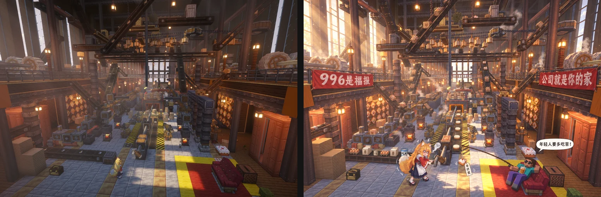
左 游戏截图 · 右 重绘 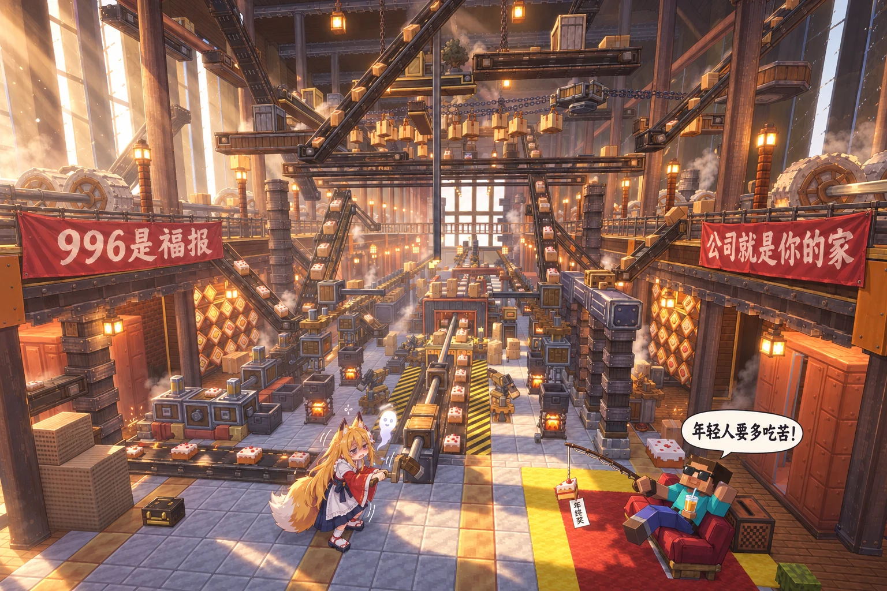
另一张（未采用） 一样热闹；但进烘炉前的传送带和左边地面传送带上同样是成品蛋糕，没修。
GPT IMAGE · 女仆发电 · 实机工厂 v8
盘丝洞
参考 Create 官方 2025 宣传片里那种密集工厂：机器成片堆叠，传送带、溜槽、管道在不同高度交错。在流水线开头加了一整段“备料区”，都在游戏里搭好并接上动力：左边一排压实机（压机压盆里的面团），一根牛奶管从夹层下的储罐分到每个盆；前景一条地面传送带从两个机械手下面经过，运着牛奶和蜂蜜，上游是从夹层垂下来的溜槽；右边一排石磨磨糖，每个上面一根溜槽，接在顶上的料仓下，料仓由一条从右侧夹层斜着下来的传送带供料；左侧夹层也有一条斜传送带把鸡蛋送下来；大厅上空横跨两条传送带桥运面粉和鸡蛋，到头掉进竖着的溜槽；两个机械臂站在底座上，把压好的面团和磨好的糖送进搅拌盆。然后照旧让整条线运转、停住、拍照、交给 GPT 重绘。
PICK 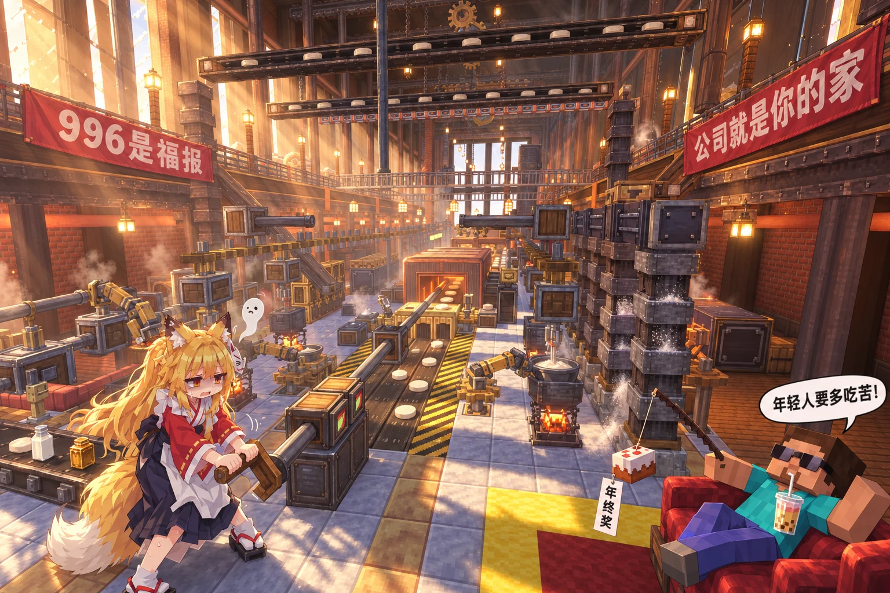
GPT · 在运转中的游戏截图上重绘 新加的机器和截图逐一对应：头顶两条传送带桥、右侧石磨和溜槽、左侧压实机排、前景机械手下的传送带、斜着下来的传送带。四处文字逐字核对过。 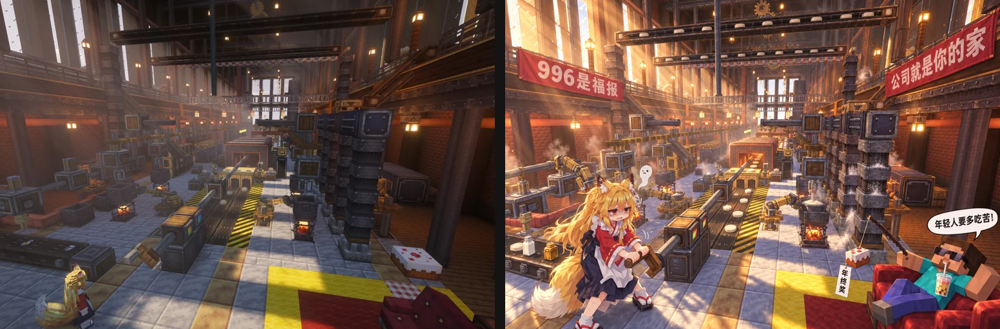
左 游戏截图 · 右 重绘 GPT 只改画风、加物料和蒸汽、加角色。 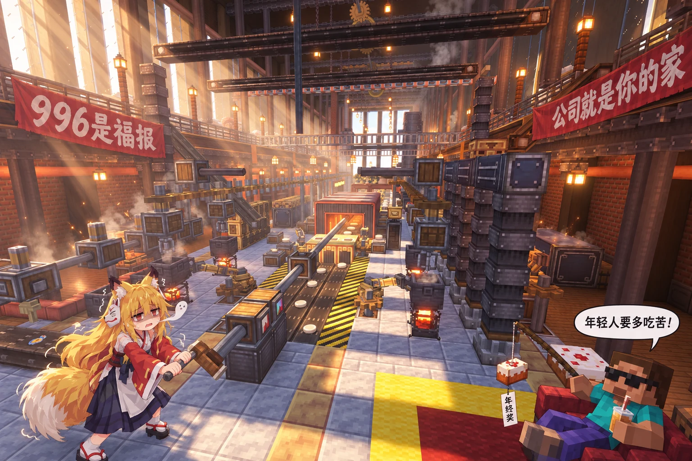
另一张（未采用） 左边的机器露得更全；但头顶传送带桥是空的，石磨也没有在工作，整体没那么热闹。
GPT IMAGE · 女仆发电 · 实机工厂 v7
让工厂真的转起来
v6 之前的问题根子在于：机械是 GPT 自己编的，它不知道机械动力的机械臂在干什么，修一处又冒出一处。这一版把分工换了：机械全交给游戏，GPT 只管画风和角色。游戏里让蛋糕线真的运转：地板下藏了创造马达，给每个机械臂旁边配一个小齿轮供电，给它们设好真实的取放点；搅拌盆里放生面糊坯，机械臂搬上传送带；烘炉里换成烤好的坯；注液器真的按 Crafts & Additions 的配方灌出巧克力和蜂蜜蛋糕。连拍时整条线先停住（拆掉隐藏马达），避免光影把移动的物品拖出残影，挑一帧机械臂正抓着面糊的。然后让 GPT 在这张截图上重绘：每台机器、每个机械臂的姿势和爪子里的东西都不动，只改画风、补光，加上酒狐、Steve、横幅和台词。
PICK 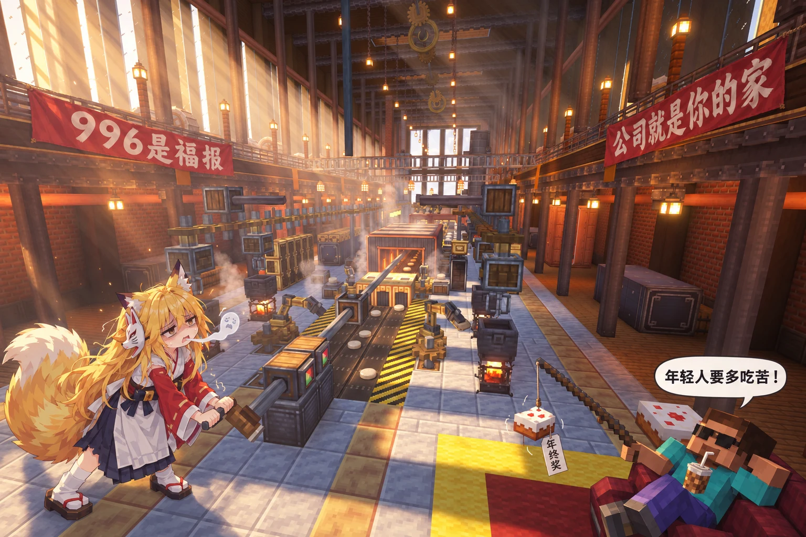
GPT · 在运转中的游戏截图上重绘 机械布局和游戏截图逐一对应：曲柄在直轴一端，两个表，三条传送带，机械臂底座旁有供电的小齿轮，右边机械臂爪里是一块面糊。四处文字逐字核对过。 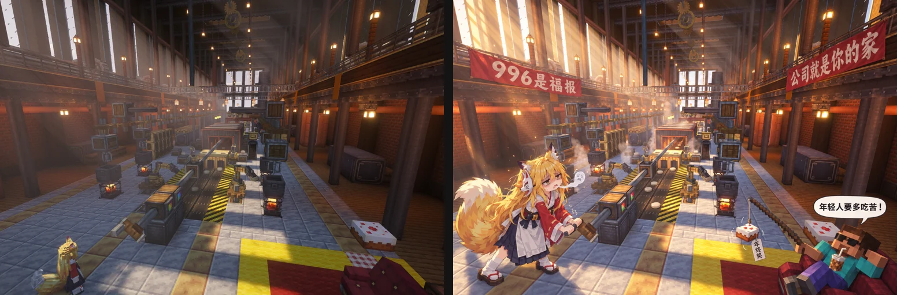
左 游戏截图 · 右 重绘 GPT 只改画风和加角色，机器一件没动。 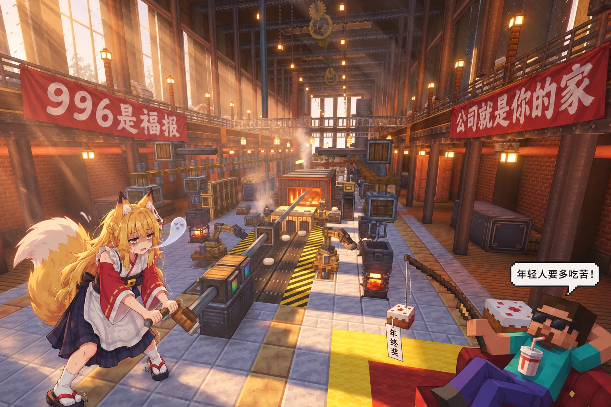
另一张（未采用） 机械同样正确；Steve 和对话气泡被挤到右上角边缘。
GPT IMAGE · 女仆发电 · 实机工厂 v6
细节修正
在 v5 上只修细节，其余像素原样保留：曲柄那根轴过了第二个表后会往上拐、插进中间的压机立柱，改成一直笔直延伸、和传送带汇向同一个消失点；右边的搅拌盆原本压在右侧传送带上，挪到地上；左边的搅拌盆也占着左侧传送带，去掉，三条带都畅通；进烘炉前那块已经烤好的金色蛋糕坯改回生面糊；近处机械臂改成游戏里的样子，站在地上，带方形黄铜底座和转台，之前一个从盆里长出来、一个没底座；远处吊在导轨下的机械臂原本有一个挂在竖杆上，改成三个都从横梁下吊着抓蛋糕。每处修改单独让 GPT 各跑两次，挑对的那次，只把改动区域拼回原图。
PICK 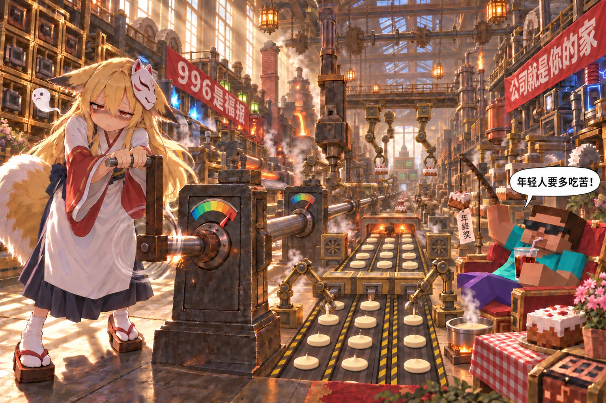
GPT · v5 上局部修正，改动区域拼回原图 酒狐、Steve、两侧工区和四句台词都是 v5 的原像素。 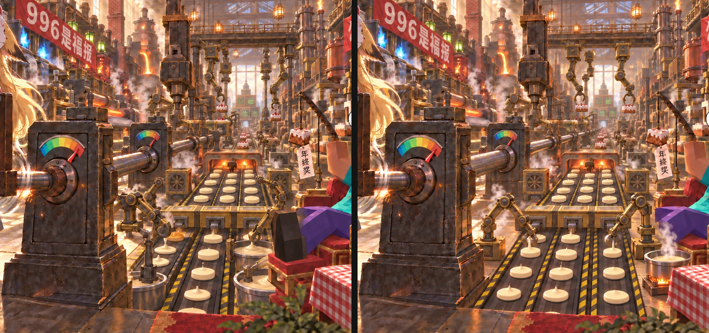
左 v5 · 右 v6 对比中间部分。
GPT IMAGE · 女仆发电 · 实机工厂 v5
蛋糕流水线
v4 的中轴只有一种压机和一条蛋糕带。这一版把中轴改成三条并行的蛋糕流水线，曲柄那根直轴带动沿途每台机器，从近到远：机械臂把面糊从搅拌盆搬上带 → 黄铜隧道分流 → 铜皮烘炉（两侧鼓风机吹过岩浆催化剂加热）→ 注液器龙门淋巧克力和蜂蜜 → 机械手按上莓果 → 压机装箱 → 打包机和青蛙港发货。沿线地面和头顶导轨上一共十几个机械臂。游戏里的蛋糕坯、蛋糕、纸箱用展示实体摆在传送带上；创造马达实测，烘炉的鼓风机和最远端的轴都在转。
PICK 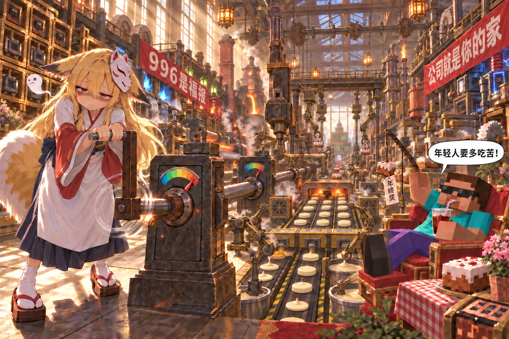
GPT · v4 上重画中轴 + 两轮小修 前景、两侧工区和四句台词原样保留。小修只改蛋糕的阶段顺序：原图在进烘炉之前就已经是烤好、淋好、点了莓果的蛋糕，改成进炉前全是生面糊。 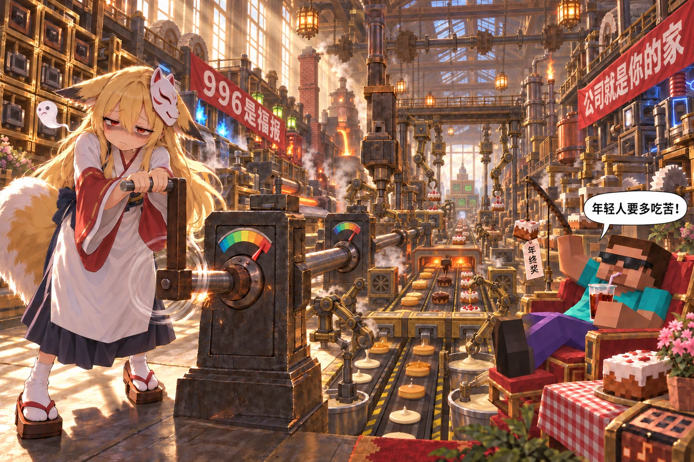
修之前 成品蛋糕更多、更热闹，但烘炉前就已经烤好、装饰好了，顺序不对。 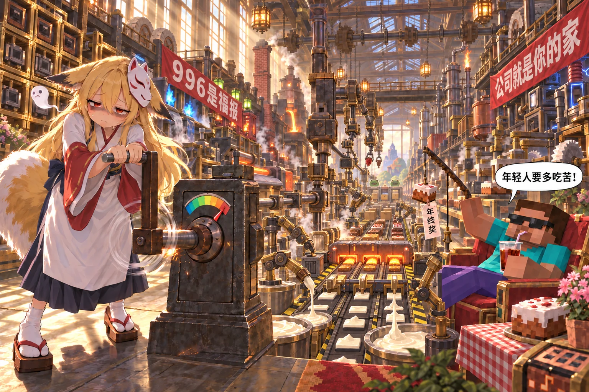
另一张（未采用） 烘炉的三个炉口最醒目，面糊倒得也好看；但第二个表（速度表）被画没了。 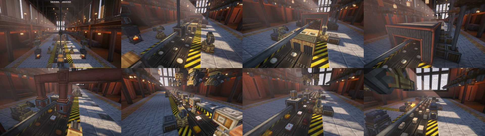
IN-GAME · 流水线 左上俯视全线，其后按顺序：面糊、黄铜隧道、烘炉、注液器龙门、机械手和倒挂机械臂、压机、打包。
GPT IMAGE · 女仆发电 · 实机工厂 v4
一整座厂，都靠她
v3 的厂房只有一种压机和铜罐，太单调。我给游戏加装了 8 个适配 Create 6 的附属（Crafts & Additions、Enchantment Industry、The Factory Must Grow、Create Deco、Interiors、Create: Connected、Bits 'n' Bobs，外加前置库 Dragons Plus），只用不发电的机器，保住“全厂只靠一个曲柄”的笑点。两条过道从近到远分成不同工区：合成器墙、鼓风机配灵魂火/岩浆/水催化剂、轧机、烈焰附魔器配经验灯、焦炉和砖烟囱、高炉和钢水；对面是交流发电机、蓄电池和特斯拉线圈，铜罐供液的注液器线，石磨和锯，化工罐和火炬烟囱，蒸馏塔，打包机、青蛙港和集装箱。传送带两边加了黄黑警示条，大厅上方横跨两座挂着笼灯的走道桥。每种工位拍了特写拼成图鉴交给 GPT，在 v3 上只重画背景。
PICK 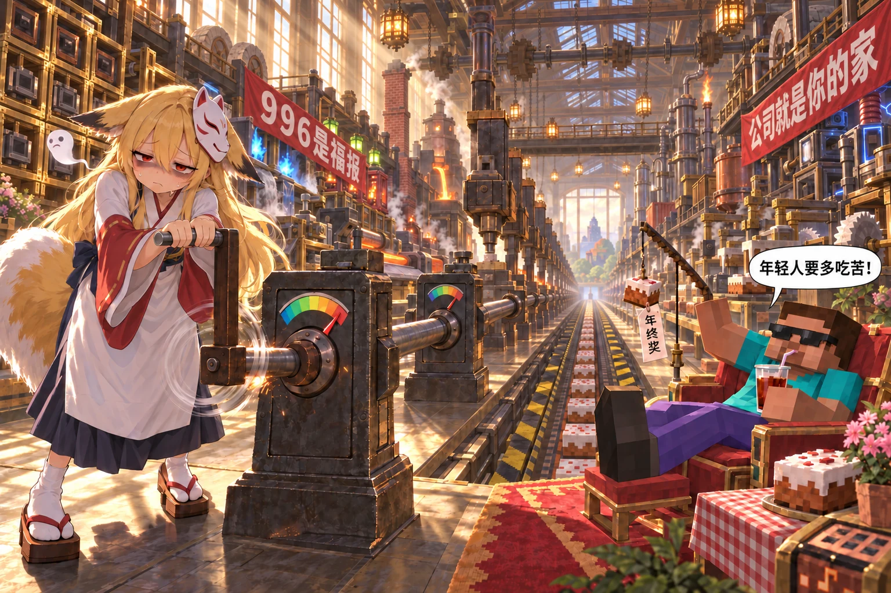
GPT · v3 上重画背景 + 一轮小修 前景（酒狐、曲柄、直轴、两个表、Steve 和四句台词）原样保留。小修：重画背景时两条横幅被弄丢了，补回原位，四处文字逐字核对过。 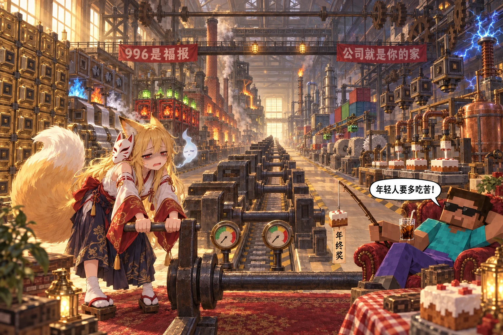
整张重画（未采用） 工区最全：注液器给蛋糕淋面、集装箱、石磨都画出来了；但曲柄变成了哑铃似的横杆，酒狐衣服也变了。 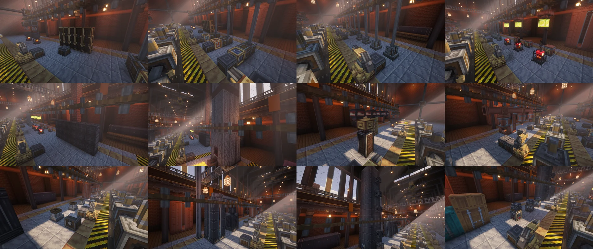
IN-GAME · 机器图鉴 从左到右、从上到下：合成器墙、鼓风机催化、轧机、烈焰附魔器、焦炉、高炉；电力区、注液器、石磨和锯、化工区、蒸馏塔、打包码头。
GPT IMAGE · 女仆发电 · 实机工厂 v3
福报
齿轮直角传动 GPT 总画不准，这一版干脆不在前景放齿轮：曲柄改装在压机主轴的最南端，正面朝镜头，轴从曲柄笔直穿过应力表和速度表，一路通进压机线（游戏里用创造马达实测，整座厂房都在转）。酒狐改成被榨干的社畜脸：死鱼眼、黑眼圈、灵魂出窍。再配上资本家语录：Steve 说“年轻人要多吃苦！”，钓竿吊着的蛋糕挂着“年终奖”（字面意义上的画饼），两侧横幅是“996是福报”和“公司就是你的家”。
PICK 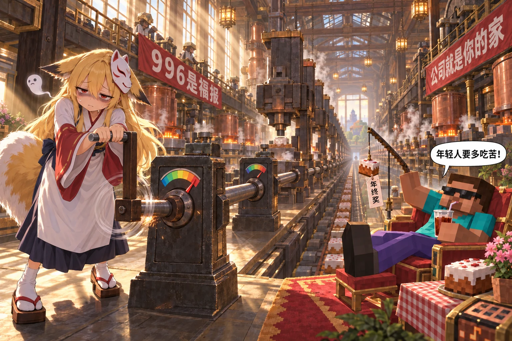
GPT · 实机参考 + 一轮小修 一根直轴：曲柄 → 应力表 → 速度表 → 压机线，没有齿轮。四处文字逐字核对过。小修只把曲柄木臂加长：原图握把几乎和轴同心，看起来像轴的延长段。 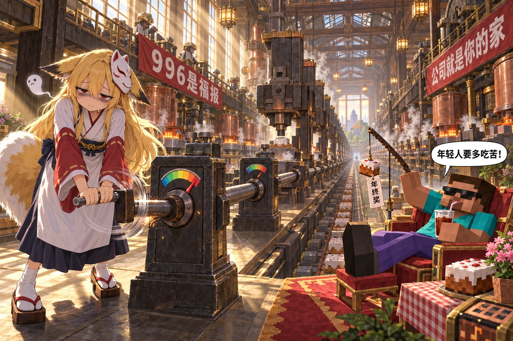
修之前 其他都一样，只是曲柄木臂太短。 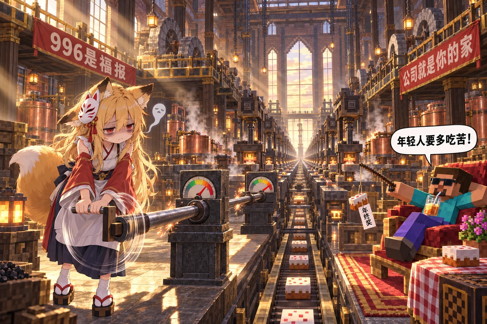
另一张（未附上一版做画风参考） 酒狐更丧更可爱；但轴过了第二个表就看不出接到哪了。 IN-GAME · REFERENCE 左：构图机位。右：曲柄、应力表、速度表在同一根直轴上，后面接压机线。
GPT IMAGE · 女仆发电 · 实机工厂 v2
齿轮要真能咬上
上一版的问题：曲柄只给过一张早期特写，齿轮怎么啮合完全没给参考，GPT 就自己发明了一个直角“冠状齿轮”；搭的厂房也暗、平、只有一层。这一版重搭：厂房浮在 y=140，西侧高窗进下午的阳光，开了 Complementary 的极端体积光；两侧夹层上有碎石轮，夹层下是铜罐和保险库，中间是下沉传送带、压机和机械手，两排混合器坐在烈焰人燃烧室上。传动按机械动力的规则接：曲柄 → 应力表、速度表 → 一对大齿轮直角啮合 → 压机主轴 → 竖轴，再用 T 形分动接到两条混合器齿轮线和天花板主轴。临时换上创造马达，读到最远的机器也在转。参考图里专门拍了曲柄特写和大齿轮正面特写。
PICK GPT · 实机参考 + 两轮小修 曲柄：轴端木轮毂、一根木臂、握把与轴平行。两个表都立在铸铁底座上，指针爆表。轴端大齿轮 A 和正面朝前的大齿轮 B 在角上咬合，B 的轴向后接进压机线。小修只动了齿轮：先把并排同轴的两个齿轮改成直角啮合，再去掉 B 下面会卡住齿的底座。 修之前 整体最好的一张，但两个大齿轮装在同一根轴上并排转，动力进不了工厂。 只给实机参考的另一张 传送带上运的全是蛋糕，挺好笑；但曲柄的木臂看不出来，齿轮朝向也自相矛盾。 IN-GAME · REFERENCE 左上：构图机位。右上：大齿轮直角啮合的正面。左下：整条传动、T 形分动和混合器。右下：从夹层看大厅。
GPT IMAGE · 女仆发电 · 实机工厂
整座工厂，一个曲柄
参考机械动力官方宣传片（This is Create、Above and Beyond）的大厅：长而对称、中间传送带一路到底、两侧成排重复的机器、头顶齿轮线和钢梁、暖色灯。在 MC 里用数据包搭了 86×29 格的厂房（传送带＋压机、烈焰人燃烧室上的混合器、齿轮线、机械臂、储罐、走道、远端大窗），酒狐站在曲柄边，旁边留一张红色座椅和蛋糕给 Steve。截图交给 GPT 重新画，不做局部修补。
PICK GPT · 实机参考 + 一轮小修 曲柄＝握把＋竖直曲臂＋轴端轮毂；轴穿过应力表（指针爆表）到大齿轮，再咬合竖轴进机器。小修只改了轴不再插进 Steve 的座椅。 同提示词另一张 厂房层次和竖向感更强；但酒狐衣服改成了花纹外褂和蓬蓬裙，Steve 也小了。 IN-GAME · REFERENCE 参考用的实景：左为大厅远景，右为构图机位（右侧红椅和蛋糕是给 Steve 留的位置）。
GPT IMAGE · 女仆发电
酒狐摇手摇曲柄
机械动力（Create）玩家拿女仆当永动机摇曲柄的梗。参考图是酒狐模型渲染图，加上从 Create 仓库取的曲柄方块贴图（安山岩机壳轮毂、深色原木曲臂、传动轴），曲柄结构写在提示词里。两种喜剧路线各一张。
FACTORY · MC REF GPT 编辑 · 参考游戏实景 在 MC 里装了机械动力 6.0.8 和 MaidUseHandCrank，搭了曲柄—应力表—齿轮塔的实景，截图交给 GPT 照着重画曲柄和近景传动。 IN-GAME · REFERENCE 参考用的游戏实景：左为整体，右为曲柄特写（轴端轮毂、竖直曲臂、平行于轴的握把）。 FACTORY · 第二版 GPT 编辑两轮 曲柄改成轴端轮毂＋曲臂＋握把；去掉底座墩子和带法兰的“水管”；轴直通大齿轮，齿轮彼此咬合，传动链从曲柄一路接到工厂。 FACTORY · 原版 整座工厂靠一个曲柄 咬牙飙泪、耳朵冒烟、手臂摇出残影；应力表指针打进红区；Steve 戴墨镜躺着喝饮料，用竿子吊着蛋糕当奖励。 EPIC 热血少年漫，用在毫无意义的事上 深夜工坊、顶光、火星、单膝跪地一脸悲壮——整套传动最后只驱动一台鼓风机，吹着一盆小花。
GPT IMAGE · 通过 CODEX CLI
同样的素材交给 GPT
同一套输入：两张角色模型渲染图、举麦的游戏截图（当构图参考）、铁锄和小麦的物品贴图，用 Codex CLI 自带的图像生成画了一张，约 2 分钟，没有 ControlNet。
GPT IMAGE CODEX CLI · 1 SHOT · 5 REFS 动画质感最好，手指真的握着道具，物品就是贴图里的像素铁锄和小麦；构图跟随截图。
FINAL v2 · 道具朝向镜头
举起麦穗，提着铁锄
上一版锄头像铲子，是因为游戏里手持物品是侧面朝外的扁片，正面拍时截图里只有一根细线，ControlNet 拿不到形状，模型就自己编。这一版把机位转到酒狐右前方 40°，道具正面朝镜头，再用同样的灰度 ControlNet（强度 0.85，只控制前 60% 步）。锄头是 L 形的刃，小麦握在手里举起来。
PICK · AI SEED 4201 · GRAYSCALE CONTROL 0.85 → 60% 两件道具都对：麦穗握在左手举起，铁锄是 L 形刃。画风比上一版更偏方块。 IN-GAME · CONTROL SOURCE 控制图来源。待机动画里举起小麦的一帧，连拍 18 张里只有这一张。 SEED 4200 · CONTROL 0.7 → 50% 锄头最像锄头，更偏动画脸；但麦穗只剩一小撮。 NOT USED · 贴贴图 把物品贴图直接贴进手里：形状准，但像贴纸、没有手指；只做全局控制时模型仍按自己的理解画锄头。
FINAL · MINECRAFT 1.20.1 + TLM 1.5.3 + COMPLEMENTARY
实机渲染：麦田里的酒狐
在 V100 上跑真正的 Minecraft：东方小女仆模组原生渲染酒狐，手里是游戏原生的铁锄和小麦，麦田、篱笆、干草块用命令搭在平原村庄旁，Complementary 光影，傍晚时分。下面两张是游戏截图；上面两张是把截图转成灰度图做 ControlNet（只控制前一半采样步）、再用模型渲染图当角色参考画出的插画。
PICK · AI SEED 3101 · GRAYSCALE CONTROL 0.7 → 50% 造型和模型一致，表情自然，抱着麦捆、拄着锄头。锄头头部画得像铲子。 SEED 3100 太阳入画，尾巴很显眼；手里的小麦丢了。 PICK · IN-GAME IN-GAME · CLOSE-UP 百分之百是游戏里的酒狐，待机动画中的一帧。 IN-GAME · WIDE 远景，左边是她刚收割过的耕地。
REFERENCE
两套官方造型
左边是模组里的挂画（HanakazeT8 绘）：金发、侧戴狐面、红色大袖。右边是模组默认的游戏内酒狐模型（geckolib:winefox），我从模组仓库里的模型文件渲染出来：造型和挂画一致。第五轮用它做参考图。
PAINTING · HANAKAZET8 IN-GAME MODEL · FRONT / 35° / BACK
ROUND 1 · 896×1152
酒狐立绘
只用文字描述挂画里的造型，不给参考图。
PICK SEED 700 最接近挂画。裙子比原作短，不是全身。 SEED 701 SEED 702 SEED 703 多了女仆头饰，领口偏低。
ROUND 2 · 1152×896
收小麦
同样的角色描述，加上傍晚麦田、镰刀、麦捆和篮子。
PICK SEED 900 设定都对上了，手和镰刀没有画崩。裙子只到小腿，脚被切掉。 SEED 901 多了女仆头饰。 SEED 902 和 900 差不多，备选。 SEED 903 篮子悬在半空，裙子最短。
ROUND 3 · 1152×896
MC 风格
前三张是二次元角色站在方块世界里：耕地、像素小麦、水渠、干草块，镰刀换成锄头。第四张让酒狐本人也变成方块人物。
PICK SEED 1000 裙子到脚踝，全身入画。锄头像锤子，手里的麦子没有像素化。 SEED 1001 多了女仆头饰。 SEED 1002 女仆头饰，人像踩在水渠上。 SEED 1100 · VOXEL 衣服和脸像素化了，头发和锤子还是平滑画法。
ROUND 4 · 1152×896 · MODEL REFERENCE
用错了模型
这一轮用的是「作者与致谢」包里的旧模型 wine_fox_maid（橙发、红蝴蝶结、黑裙），不是默认酒狐，结果作废，仅作对比。前两张要求保持方块人物，后两张要求按模型配色画成二次元。
SEED 1200 · BLOCKY 照搬了参考图的双视图排版，分成了左右两格。 SEED 1201 · BLOCKY 像带光影的游戏截图。蝴蝶结跑到头顶正中，看不到狐尾。 SEED 1300 · ANIME 和这个旧模型对得上，但不是酒狐的标准造型。 SEED 1301 · ANIME 参考图的白底漏进了画面左侧。
ROUND 5 · 1152×896 · GECKOLIB MODEL
收小麦，MC 风格
参考图换成默认酒狐模型的 3/4 侧面渲染，只给一张，避免上一轮的分格和白底问题。前两张要求方块人物，后四张要求二次元画法，结果都成了方块身体配二次元脸的混合风格。
PICK · BLOCKY SEED 1400 · BLOCKY 造型完整，狐面在右侧，锄头在手里。 SEED 1401 · BLOCKY 锄头像是悬在身后。 SEED 1500 构图完整，锄头更像斧头。 PICK SEED 1501 最有动感，走在田间小路上，造型全对。手里拿的是镐不是锄头。 SEED 1502 工具像锤子，麦子插在桶里。 SEED 1503 锄头朝下拄着，备选。
2026-10-09 至 10-10 · 早期几轮：Qwen-Image-2.1（GGUF Q8_0）+ ComfyUI，Tesla V100 16GB；工厂系列：Minecraft 1.20.1 + 机械动力 6.0 实机截图，GPT 图像模型重绘。酒狐角色属于东方小女仆模组及其作者，Steve 属于 Mojang；v18 的动作参考来自 Wone_J 的动画。非商业同人。